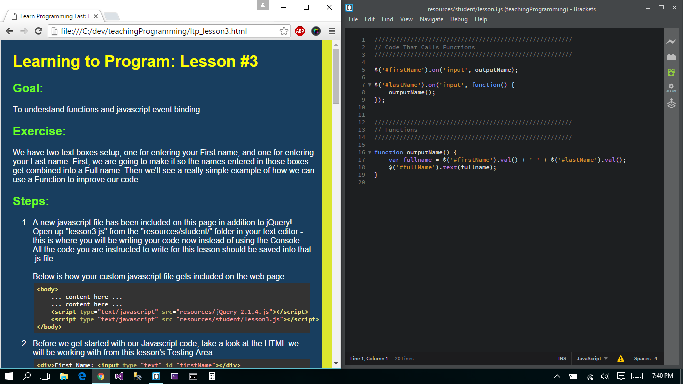
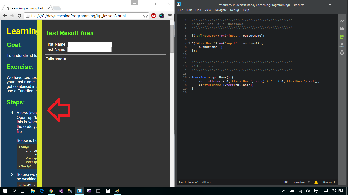

Learning to Program: Intermission 2-3
Explanation:
From this point out there's a few recommendations you need to be aware of before continuing.
Recommendations:
- From this point onward, you will need a text editor to write your own javascript files. Since basic knowledge of HTML is a prerequisite for this course, you may already have a favorite editor you enjoy using. If you don't, the software I recommend downloading is a free editor named Brackets which can be grabbed HERE.
- If you are working on a single monitor workstation or laptop, it is recommended that you place the browser window with the lesson open on half your screen, and fill the other half of your screen with the text editor. On newer Windows machines you can just drag an app to one side and it will size to half your monitor automatically. See below for an example setup: 
- Lastly, as you've probably noticed, each lesson has a "testing area" to show the results of whatever you are doing. By default, this testing area is open, but to close it, just click on the yellow bar to the left of the testing panel. To reopen the testing panel just click the yellow bar again. 
Copyright © 2015 Josiah Bubna.